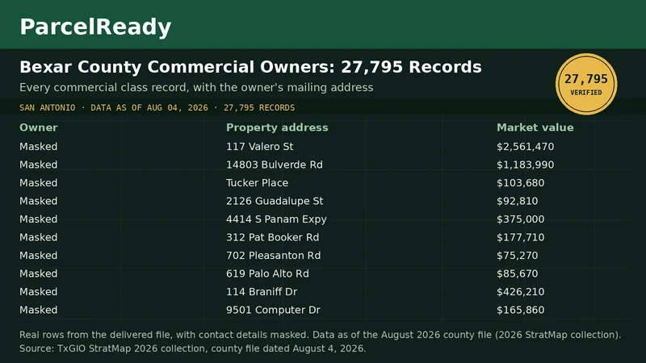

$79 one time
27,795 records, data as of August 4, 2026. Yours as of the pull you buy; a one time file does not update itself, and we say so plainly.
Re-verified monthly on the spine cycle; re-pulled when TxGIO refreshes the county file.
County records pack · San Antonio · Commercial Owners
27,795 commercial property owners in Bexar County, with mailing addresses.
We do the work. You get the leads.
Built for: Investors, brokers, and service companies who target commercial owners in Bexar County.
Coverage: Bexar County, in the Austin to San Antonio metro.
50 real rows, owner names and mailing addresses unmasked in the file, so you can spot check the source record before you pay $79.
The file arrives by email, in CSV and Excel, the exact format of the full pack, carrying every field unmasked.
Re-verified monthly on the spine cycle; re-pulled when TxGIO refreshes the county file. Sold and delivered on this site.
Source: TxGIO StratMap Land Parcels, 2026 collection, Bexar County file dated August 4, 2026, a republication of the Bexar Central Appraisal District roll. Re-pulled and re-verified monthly on the spine cycle.
Live preview · first 5 rows50 preview rows in all
| Owner Name | Property Address | Property City | Market Value |
|---|---|---|---|
| Masked | 117 Valero St | San Antonio | $2,561,470 |
| Masked | 300 Augusta St | San Antonio | $22,114,390 |
| Masked | 517 E Houston St | San Antonio | $936,000 |
| Masked | 715 E Crockett St | San Antonio | $1,399,560 |
| Masked | 1160 E Commerce St | San Antonio | $160,054 |
Real rows from this pack, contact details masked on screen. See the full preview below; the delivered sample carries every field.

The label promise: if this pack does not match what this page promises, tell us within 30 days and we will fix it or refund the pack.
$749,219
Median value · Bexar County Commercial Owners
$79 one time
27,795 records, data as of August 4, 2026. Yours as of the pull you buy; a one time file does not update itself, and we say so plainly.
Re-verified monthly on the spine cycle; re-pulled when TxGIO refreshes the county file.
Membership will deliver every refresh to your inbox automatically, so the file you work from is never the stale one. It is not on sale yet.
Join the follow up listMembership checkout for this pack opens on the store next; the follow up list hears first.
You could pay $1,018 to rent a list from one of our competitors. Or $79 to own the data from us.
PropertyRadar entry plan with dialer, worked first campaign (the mail only figure is $919), figures as of November 22, 2026. Ours: one time, tax included, pull date on the label, nothing to cancel.
27,795
Records · Bexar County Commercial Owners
Free sample, viewable right here
What you see here is the proof surface: real rows from the delivered file, the same fields the pack carries, with contact details masked on screen; the file's full count and source are printed on the label above. The free sample file itself, 10 percent of the full file (15 rows at minimum, 50 at most, the same rule on every pack in the catalog), carries every field exactly as it ships, and it is delivered by email below. Inspect the structure and the counts here; the usable file comes by email.
LIVE PREVIEW · BEXAR COUNTY COMMERCIAL OWNERSPULLED AUGUST 4, 2026
Preview rows shown with contact details masked: phone and email on trade packs, owner name and mailing street address on county packs. Mailing city, state, and ZIP stay visible so the geography stays checkable. A blank field means it could not be verified. It is never guessed. The delivered sample carries every value.
The file arrives by email, in CSV and Excel, the exact format of the full pack, carrying every field unmasked.
The catalog is building state by state. Tell us the state and the category, and sample requests shape the build order.
Request a free sample More Texas data